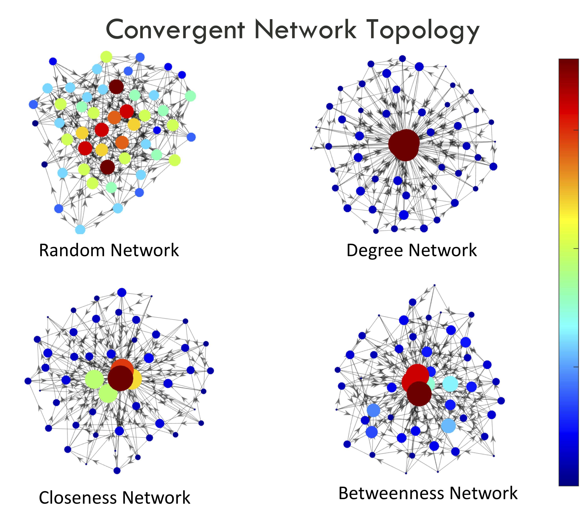
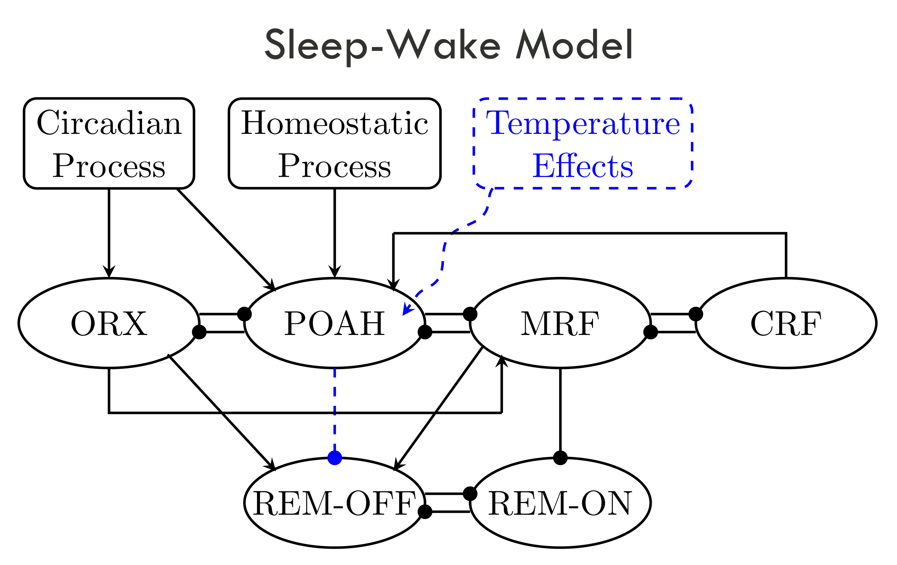
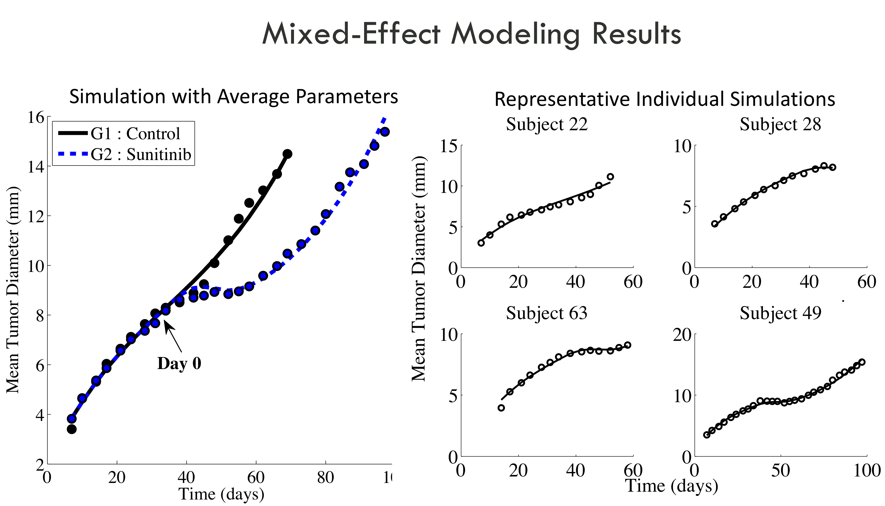

General
Focus
My research interests lie in mathematical problems
with applications in
Neuroscience, Oncology, and
Evolutionary Biology. More
specifically, I use the
techniques of parameter
estimation, machine
learning, dynamical systems
and network theory to create
models of biological
phenomenon (e.g. cancer
growth, sleep dynamics,
cellular immune
dynamics). My current
research program facilitates
truly interdisciplinary
collaboration spanning a
number of subject areas
including mathematics,
computer science, physics,
engineering, evolutionary
biology, and
oncology.
Exploring the Impact of Ectoparasites on the Evolution of Social Systems

Here, we
seek to understand how
social systems evolve under
a careful balancing act
between living in
collaborative groups that
can accomplish complex tasks
and avoiding patterns in
social contact that would
amplify the risks of
infection transmission.
We are developing and
analyzing the mathematical
systems needed to understand
the interplay between
sociality and ectoparasitic (parasites that live external to their host) infections.
A number of models have investigated how organizational structure can emerge from individual behavioral dynamics. The effects of these dynamics are explored through models of social network theory where mathematical metrics are used to quantify the relative importance of nodes and the organization of the network. Network centrality theory is used to identify the most important individuals in a social network as well as to characterize the properties of the network as a whole. Within this context, our main focus for this project centers around characterizing the link between parasite load and sociality in dynamic networks. We aim to capture the key elements of these social systems in two ways : 1) using a system of differential equations; 2) via agent-based simulations.
Back
to the top
Temperature
Effects on Rem/non-Rem Sleep
Dynamics

Sleep is a behavioral state
in which we spend nearly one
third of our lives. This
biological phenomenon
clearly serves an important
role in the lives of most
species. While much effort
has been put forth in
understanding the nature of
sleep, many aspects of sleep
are still not well
understood. Mathematical models of sleep often neglect temperature properties and
the effects of temperature
on sleep, as they pose
additional complexities to
the already-intricate nature
of sleep. However, if it is
believed that temperature
plays a key role in both the
quality and quantity of
human sleep, then including
temperature as a model
feature is imperative. Thus,
we have developed a
mathematical model that
incorporates this key
component and its effects on
sleep, so that we may better
describe and understand the mechanisms underlying sleep behavior when
thermoregulation plays a role. We have developed a system of
nonlinear, Morris-Lecar type, ordinary differential equations that
model human sleepwake regulation with thermoregulation and temperature
effects. Our results show that incorporating a biologically inspired
representation of thermoregulation in a mathematical model for human
sleep/wake cycling can account for several features observed in
experimental data. Analysis of the model provides a more detailed
understanding of the underlying mathematical mechanisms associated
with sleep. We find that temperature effects could provide a crucial
component of mathematical models of human sleep/wake cycling.
Back
to the top
Optimization
of Combined Cancer
Treatments :
Anti-angiogenic Drugs and
Chemotherapy

My postdoctoral
appointment was with the
NUMED
Team of
INRIA Grenoble - Rhône-Alpes. Here, we use longitudinal murine tumor growth data
to develop nonlinear,
mixed-effect, ODE models to
study the effects of combined
anti-angiogenic and
chemotherapeutic treatments.
Upon model validation, we run numerical experiments to determine
optimal treatment protocols
for the administration of
anti-angiogenics and
chemotherapy. The results of
these theoretical
experiments are then
followed up with biological
studies to determine the
effectiveness of the
theoretically obtained
protocols.
Back
to the top
|